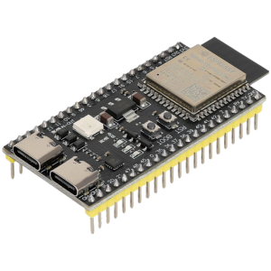

Resumen
Resumen
hemos explorado las capacidades de multitarea en diferentes microcontroladores: el ATtiny, el ATmega y el ESP32. Cada uno tiene sus limitaciones y características en cuanto a la gestión de tareas concurrentes, con el ATtiny y el ATmega utilizando técnicas de simulación de multitarea mediante interrupciones y multiplexación,
mientras que el ESP32 ofrece multitarea real gracias a su arquitectura de doble núcleo y el soporte de FreeRTOS.
Introducción
Introducción
La velocidad de procesamiento de un microcontrolador determina su capacidad para ejecutar instrucciones y manejar tareas en tiempo real. Es fundamental en el diseño de sistemas embebidos, ya que influye en el rendimiento, la eficiencia energética y la compatibilidad con sensores y periféricos.
Un microcontrolador más rápido permite manejar cálculos complejos, responder rápidamente a eventos externos y ejecutar múltiples tareas simultáneamente. Sin embargo, un exceso de velocidad puede aumentar el consumo de energía y generar más calor, lo que es crítico en dispositivos portátiles o de bajo consumo.
Elegir la velocidad adecuada garantiza que el sistema funcione de manera óptima sin desperdiciar recursos, equilibrando potencia y eficiencia según la aplicación. 🚀
Tabla comparativa
Attiny
 |
ATTMega
 |
ESP32
 |
|
|---|---|---|---|
| Memoria FLASH | 8 KB - 32 KB | 8 KB - 256 KB | 4 MB (varía) |
| Memoria RAM | 6 - 23 | 23 - 54 | 34 - 48 |
| UART | 1 - 2 | 1 - 4 | 2 - 3 |
Materiales
Materiales
| ESP3232C6 |
| Arduino |
| Attiny |
Desarrollo
Desarrollo
ATtiny: Al ser un microcontrolador de 8 bits, el ATtiny no soporta multitarea real. Sin embargo, puede simular multitarea utilizando interrupciones y técnicas como la multiplexación de tareas. Estas técnicas permiten que el ATtiny gestione varias tareas de manera secuencial pero eficiente, aunque no de forma paralela.
ATmega: Similar al ATtiny, el ATmega no tiene soporte para multitarea nativa. No obstante, con el uso de interrupciones y multiplexación, es posible simular una multitarea, alternando rápidamente entre tareas, lo que da la impresión de que varias tareas se ejecutan simultáneamente.
ESP32: El ESP32 es mucho más avanzado y permite multitarea real. Con su arquitectura de doble núcleo, el ESP32 puede ejecutar tareas en paralelo. Gracias a FreeRTOS, este microcontrolador gestiona hilos (tasks) de forma eficiente, permitiendo que diversas tareas se ejecuten simultáneamente, mejorando el rendimiento y la capacidad de respuesta en aplicaciones más complejas.
ATTINY
ATTINY
La velocidad del ATtiny varía según el modelo y el tipo de oscilador utilizado. Por defecto, su reloj interno funciona a 1 MHz, pero puede configurarse hasta 8 MHz sin necesidad de un cristal externo.
Si se utiliza un reloj externo, como un cristal o un resonador cerámico, la frecuencia puede alcanzar hasta 20 MHz en la mayoría de los modelos.
| Modelo | Velocidad máxima (MHz) | Flash (KB) | RAM (Bytes) | GPIO |
|---|---|---|---|---|
| ATtiny85 | 20 MHz | 8 KB | 512 | 6 |
| ATtiny84 | 20 MHz | 8 KB | 512 | 12 |
| ATtiny13 | 20 MHz | 1 KB | 64 | 5 |
Flash
Es la memoria principal donde se almacena el programa. Es no volátil, por lo que conserva los datos tras apagarse.
Ejemplo: Si grabas un código en un ATtiny85, este permanecerá allí incluso después de desconectarlo de la corriente.
Capacidad: Entre 1 KB y 8 KB, según el modelo.
RAM
Se usa para almacenar variables y datos temporales durante la ejecución. Es volátil, por lo que su contenido se pierde al reiniciar el sistema.
Ejemplo: Si una variable almacena el número de veces que presionas un botón, este dato se perderá al apagar el microcontrolador.
Capacidad: Entre 64 y 512 Bytes.
Comparativa entre UART y Serial
| Característica | UART | Serial |
|---|---|---|
| Definición | Protocolo de comunicación en serie asíncrona que usa dos líneas: TX (transmisión) y RX (recepción). | Término genérico que refiere a la transmisión de datos bit a bit a través de un solo canal, usando protocolos como UART. |
| Tipo de Comunicación | Asíncrona (sin necesidad de reloj externo, usa tasa de baudios compartida). | Comunicación serie en general, que puede usar diversos protocolos como UART, SPI o I2C. |
| Líneas de Comunicación | TX y RX (Transmisión y Recepción). | Generalmente usa UART para transmisión, pero también puede incluir otros tipos de comunicación en serie. |
| Configuración | Flexible, permite ajustar tamaño de datos, paridad y bits de parada. | Varía según el protocolo utilizado; UART es uno de los más comunes. |
| Uso | Comúnmente utilizado para comunicación entre microcontroladores y dispositivos como módulos GPS, Bluetooth, etc. | Usado generalmente para depuración, programación o transmisión de datos entre dispositivos. |
Multitarea
(Hilos)
El ATtiny no tiene soporte nativo para multitarea con hilos paralelos, pero puede simularla mediante métodos de software como interrupciones y multiplexación de tareas. Usando interrupciones, el microcontrolador puede pausar una tarea en curso para atender eventos importantes, como cambios en sensores o pines, y luego reanudarla. Además, con técnicas como la multiplexación de tareas, se puede alternar entre diferentes tareas en ciclos rápidos, lo que da la sensación de que se están ejecutando simultáneamente, aunque el ATtiny ejecuta solo una tarea a la vez.
ATmega
ATmega
La familia de microcontroladores ATmega, fabricada por Microchip Technology, pertenece a la arquitectura AVR de 8 bits y es más potente que los ATtiny, siendo utilizada en proyectos complejos como Arduino. Su velocidad de procesamiento varía según el modelo y el tipo de oscilador utilizado. Con reloj interno, funcionan por defecto a 1 MHz, pero pueden alcanzar hasta 8 MHz sin cristal externo. Con reloj externo, la mayoría de los modelos soportan cristales de hasta 20 MHz.
| Modelo | Velocidad máxima (MHz) | Flash (KB) | RAM (Bytes) | GPIO |
|---|---|---|---|---|
| ATmega328P | 20 MHz | 32 KB | 2 KB | 23 |
| ATmega32U4 | 16 MHz | 32 KB | 2.5 KB | 26 |
| ATmega2560 | 16 MHz | 256 KB | 8 KB | 86 |
Memoria Flash
(Almacenamiento del Programa)
Tipo: No volátil, lo que significa que conserva los datos incluso cuando se apaga el microcontrolador.
Uso: Almacena el código del programa que ejecuta el microcontrolador.
Capacidad: Varía dependiendo del modelo, generalmente entre 8 KB y 256 KB. El ATmega328P, por ejemplo, tiene 32 KB de Flash.
Ejemplo: Imagina que estás programando un sistema de control para una lámpara inteligente. El código que controla la encendida y apagada de la lámpara se almacenaría en la Flash.
Características:
- La Flash es más lenta para escribir, pero retiene la información incluso cuando se apaga el microcontrolador.
- La cantidad de ciclos de escritura es limitada (aproximadamente 10,000 veces), por lo que debe evitarse reescribir datos constantemente.
- Es la memoria principal para el código que debe ejecutarse al arrancar el microcontrolador.
- Si tu proyecto crece en complejidad, es importante optimizar el tamaño del código para dejar suficiente espacio libre.
Memoria RAM (Datos Volátiles)
Tipo: Volátil, lo que significa que se pierde al apagar o reiniciar el microcontrolador.
Uso: Almacena las variables y datos temporales durante la ejecución del programa.
Capacidad: Generalmente varía entre 1 KB y 8 KB, dependiendo del modelo. El ATmega328P tiene 2 KB de RAM.
Ejemplo: Si estás programando un sistema que mide la temperatura con un sensor, la temperatura leída se almacena en la RAM para que puedas procesarla o mostrarla en una pantalla LCD.
Características:
- La RAM permite un acceso rápido a los datos mientras el microcontrolador está funcionando, pero su contenido se pierde al apagar el dispositivo.
- Si no se optimiza bien, el uso excesivo de la RAM puede causar desbordamientos de pila o afectar el rendimiento general.
- Para proyectos pequeños, como el control de un sensor de humedad, la RAM del ATmega328P puede ser suficiente, pero en sistemas más grandes, la falta de memoria RAM puede generar problemas.
Comparativa entre UART y Serial del ATmega
| Característica | UART | Serial |
|---|---|---|
| Definición | Protocolo de comunicación serie asíncrona que usa dos pines: TX (Transmisión) y RX (Recepción), sin necesidad de reloj externo. | Término genérico que se refiere a cualquier comunicación en serie, pero en este caso, generalmente hace referencia a UART. |
| Tipo de Comunicación | Asíncrona, no requiere señal de reloj externa, sincroniza la transmisión con la tasa de baudios. | Generalmente hace referencia a la comunicación UART, que es una forma asíncrona de comunicación en serie. |
| Líneas de Comunicación | TX (Transmisión) y RX (Recepción). | Usa generalmente las líneas TX y RX de UART, aunque puede referirse a otros protocolos de comunicación en serie. |
| Configuración | Flexible: tamaño de datos, paridad y bits de parada ajustables. | La configuración puede ser similar a la de UART si se refiere a este protocolo, pero puede incluir otros protocolos de comunicación. |
| Uso Común | Comunicaciones entre microcontroladores y dispositivos como sensores, módulos Bluetooth, GPS, etc. | Se utiliza principalmente para depuración y comunicación entre dispositivos, común en plataformas como Arduino. |
Multitarea
(Hilos)
El ATmega, al ser un microcontrolador de 8 bits, no soporta multitarea con hilos paralelos de manera nativa. Sin embargo, es posible simular multitarea utilizando interrupciones y multiplexación. Las interrupciones permiten que el ATmega responda a eventos sin interrumpir otras tareas en curso, mientras que la multiplexación de tareas, mediante temporizadores o ciclos de tiempo, permite alternar entre diferentes tareas rápidamente, dando la sensación de ejecución simultánea.
Aunque no hay multitarea real, estas técnicas permiten gestionar múltiples tareas de manera eficiente.
ESP32
ESP32
El ESP32, desarrollado por Espressif Systems, es un microcontrolador de 32 bits con uno o dos núcleos, diseñado para aplicaciones de IoT y redes inalámbricas. Su CPU opera entre 160 y 240 MHz, con modelos optimizados para ahorro energético a 150 MHz. Cuenta con memoria Flash externa (4 MB o más) y 320 KB de SRAM interna, ampliable con 8 MB adicionales. Además, integra un coprocesador de bajo consumo (ULP) para ejecutar tareas como la lectura de sensores sin activar el núcleo principal, optimizando la eficiencia energética.
| Modelo | CPU | Velocidad (MHz) | Flash (MB) | RAM (KB) | GPIO |
|---|---|---|---|---|---|
| ESP32-WROOM-32 | Dual-core | 240 MHz | 4 MB | 520 KB | 34 |
| ESP32-S2 | Single-core | 240 MHz | 4 MB | 320 KB | 43 |
| ESP32-S3 | Dual-core | 240 MHz | 16 MB | 512 KB | 44 |
| ESP32-C3 | Single-core (RISC-V) | 160 MHz | 4 MB | 400 KB | 22 |
Memoria Flash
Tipo: No volátil, mantiene la información incluso cuando el dispositivo está apagado.
Uso: Almacena el firmware (código del programa), configuraciones persistentes y otros archivos que deben permanecer entre reinicios.
Capacidad: Varía entre 4 MB y 16 MB, dependiendo del modelo de ESP32. Las versiones más comunes suelen tener entre 4 MB y 8 MB de Flash.
Características:
- Lectura rápida: Ideal para cargar y ejecutar el programa desde la memoria Flash.
- Escritura más lenta: La Flash tiene un número limitado de ciclos de escritura (aproximadamente 100,000 a 1,000,000 de escrituras).
Ejemplo: En un proyecto como una estación meteorológica con Wi-Fi, el código para leer los sensores y enviar los datos a la nube se almacena en la Flash. También puedes guardar configuraciones como las credenciales Wi-Fi para que se carguen automáticamente cada vez que el dispositivo se reinicie.
Memoria RAM
Tipo: Volátil, pierde toda la información cuando se apaga el microcontrolador.
Uso: Se utiliza para almacenar datos temporales durante la ejecución del programa, como variables, buffers, pilas y estructuras de datos en tiempo real.
Capacidad: El ESP32 tiene 512 KB de RAM en total, con aproximadamente 320 KB dedicados a almacenamiento de datos y 160 KB reservados para caché de acceso rápido.
Características:
- Acceso rápido: Crucial para la ejecución en tiempo real de tareas que requieren procesamiento inmediato.
- Gestión eficiente: Es importante optimizar el uso de la RAM para evitar desbordamientos o saturación, ya que la memoria es limitada.
Ejemplo: Si tienes un sistema de monitoreo de sensores de temperatura y humedad, la RAM almacena las lecturas de los sensores antes de procesarlas o mostrarlas en una pantalla LCD. Una vez procesados, los resultados pueden ser enviados a la Flash o a un servidor.
| Memoria | Tipo | Capacidad típica | Uso principal | Características |
|---|---|---|---|---|
| Flash | No volátil | 4 MB a 16 MB | Almacena el código del programa, configuraciones, archivos. | Rápido para lectura, más lento para escritura, limitado en ciclos de escritura. |
| RAM | Volátil | 512 KB | Almacena datos temporales durante la ejecución del programa. | Acceso rápido a datos en tiempo real, gestión eficiente importante para evitar errores de memoria. |
Comparativa entre UART y Serial del ESP32
| Característica | UART | Serial |
|---|---|---|
| Definición | Protocolo de comunicación asíncrona que utiliza los pines TX y RX para la transmisión y recepción de datos sin necesidad de un reloj externo. | Término que generalmente se refiere a la interfaz UART del ESP32, utilizada para la comunicación serial, programación y depuración. |
| Tipo de Comunicación | Asíncrona, no requiere señal de reloj externa, se sincroniza por la tasa de baudios. | Generalmente hace referencia a la interfaz UART para la transmisión de datos en serie, aunque puede incluir otros métodos. |
| Líneas de Comunicación | TX (Transmisión) y RX (Recepción). | Usa los mismos pines TX y RX, pero en un contexto más amplio de comunicación serial. |
| Configuración | Permite ajustar parámetros como la tasa de baudios, el tamaño de los datos, la paridad y los bits de parada. | Similar a la configuración de UART, pero se refiere al uso general de la comunicación serial en el ESP32. |
| Soporte para Múltiples Interfaces | Hasta 3 interfaces UART (UART0, UART1, UART2), permitiendo múltiples conexiones. | El término "Serial" engloba las distintas interfaces UART, permitiendo múltiples conexiones seriales. |
| Velocidad de Comunicación | Hasta 5 Mbps. | Hasta 5 Mbps, ya que generalmente utiliza UART para la comunicación serial. |
| Uso Común | Comunicación con dispositivos como sensores, módulos Bluetooth, y otros periféricos. | Comúnmente utilizado para la programación, depuración y comunicación de datos entre el ESP32 y otros dispositivos. |
Multitarea
(Hilos)
El ESP32, gracias a su arquitectura de doble núcleo y el sistema operativo FreeRTOS,
permite realizar multitarea real. Con dos núcleos, puede ejecutar tareas en paralelo, distribuyendo el trabajo entre ambos. FreeRTOS facilita la gestión de hilos, permitiendo que múltiples tareas se ejecuten simultáneamente, mejorando la eficiencia y el rendimiento en aplicaciones complejas.
Conclusion
Conclusion
El ATtiny y el ATmega simulan multitarea mediante técnicas como interrupciones y multiplexación, mientras que el ESP32 soporta multitarea real gracias a su doble núcleo y FreeRTOS, ofreciendo una mayor eficiencia en la gestión de tareas concurrentes.